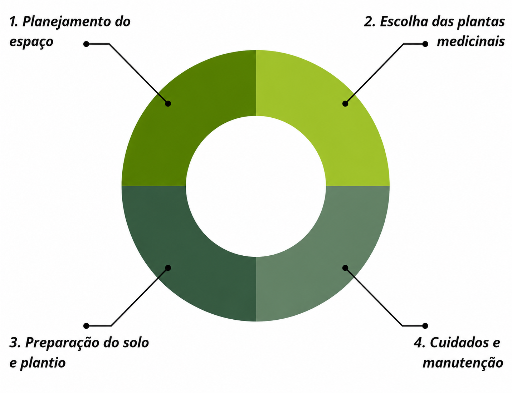

Como posso fazer meu próprio JARDIM MEDICINAL em casa?
Criar um jardim medicinal em casa é mais simples do que parece, o segredo está em organizar bem os passos. Aqui vai um guia com 4 focos principais, direto ao ponto:

Um pequeno Ensino
1. Planejamento do espaço
Antes de plantar, observe onde será o jardim: pode ser no quintal, varanda ou até dentro de casa. Escolha um local com boa luz natural (pelo menos 4 a 6 horas de sol por dia) e com ventilação. Pense também no tamanho: vasos pequenos, jardineiras ou canteiros — tudo depende do espaço disponível.
2. Escolha das plantas medicinais
Comece com plantas fáceis de cuidar e muito úteis no dia a dia. Algumas boas opções:
- Hortelã (digestivo)
- Camomila (calmante)
- Alecrim (circulação e memória)
- Erva-cidreira (relaxante)
- Babosa (cicatrizante)
Escolha plantas que você realmente vai usar, seja em chás, receitas ou cuidados naturais.
3. Preparação do solo e plantio
Use terra rica em nutrientes, leve e bem drenada (mistura de terra + areia + matéria orgânica). Plante as mudas ou sementes com cuidado e respeite o espaço entre elas. Regue logo após o plantio, mas sem encharcar — o solo deve ficar úmido, não encharcado.
4. Cuidados e manutenção
- Regue regularmente (geralmente 2 a 3 vezes por semana)
- Retire folhas secas e ervas daninhas
- Adube o solo a cada 15 ou 30 dias
- Observe sinais de pragas ou falta de nutrientes
Com o tempo, você aprende o ritmo de cada planta.